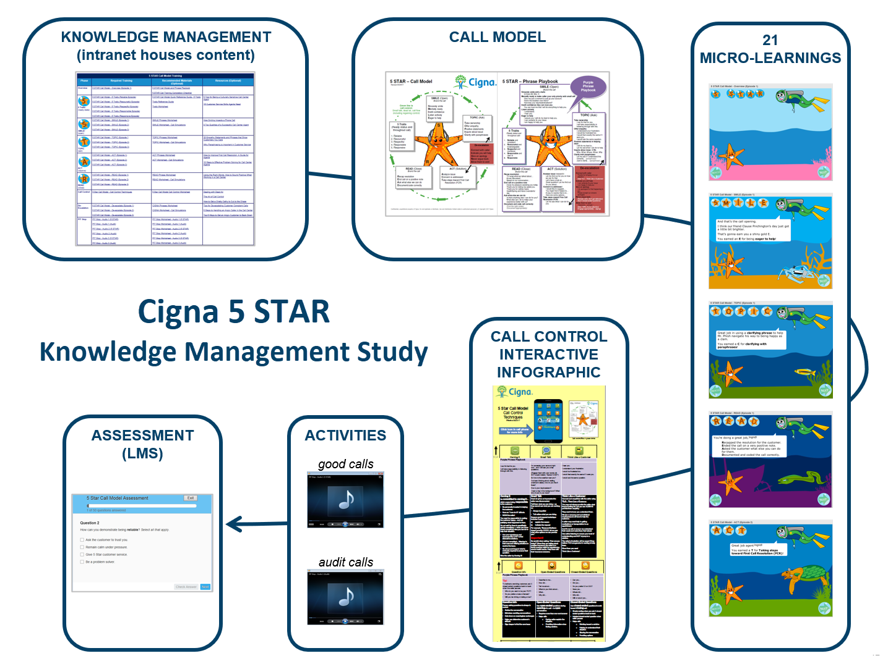
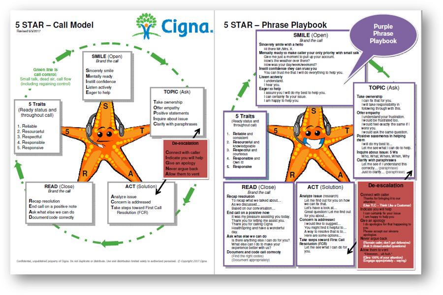
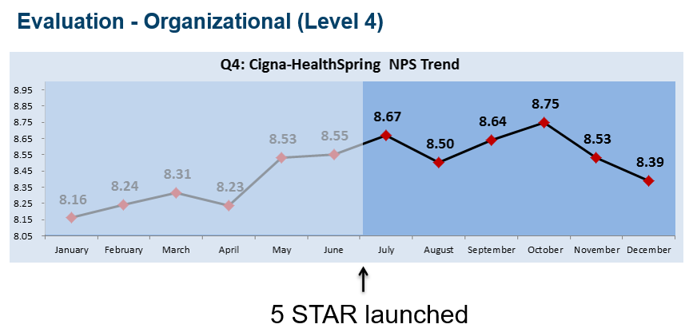

The Challenge
Although best practices were distributed across Operations, Quality, Workforce Management, managers, supervisors, team leads, training resources, and existing systems, the challenge was to create a scalable, accessible knowledge solution that could support approximately 600 internal and vendor call center agents, including both new hires and incumbents.The solution needed to:
• Establish a consistent approach to call handling across multiple audiences and locations
• Capture best practices from Quality and return that knowledge to Operations for frontline use
• Launch within a three-month timeframe
• Provide just-in-time access to information without relying solely on the LMS
• Reinforce 5 core performance expectations: courtesy/respect, compliance, confidence, information, and accuracy/performance
• Support knowledge needs across Appeals, Claims, Grievances, and Quality
AH™ Approach
AH™ is a sustainable transformation I created... to reflect my experience with strategizing the best approach... to streamline operations, optimize workflows, and align people, processes, and technology.
A
AI and Automation
• Identified an opportunity for an AI-enabled chat to help agents answer caller questions.
• Leveraged call-whisper technology that provided agents with information about the purpose of an inbound call before the interaction.
• Structured knowledge assets to support future AI-enabled retrieval and assistance.
• Leveraged call-whisper technology that provided agents with information about the purpose of an inbound call before the interaction.
• Structured knowledge assets to support future AI-enabled retrieval and assistance.
B
Business Transformation
• Created 5 STAR Call Model, a mnemonic that gave call center agents a consistent framework.
• Integrated just-in-time learning into C-KIT to support operations, member care, and compliance.
• Translated dispersed operational knowledge and best practices into a repeatable call-handling framework and scalable solution.
• Integrated just-in-time learning into C-KIT to support operations, member care, and compliance.
• Translated dispersed operational knowledge and best practices into a repeatable call-handling framework and scalable solution.
C
Change Management
• Applied change-management principles to move organization toward sustained new call-handling behaviors.
• Prepared agents, managers, supervisors, and team leads for the new call model.
• Supported adoption through ongoing embedment activities, huddle planners, communication, practice, coaching, and reinforcement.
• Prepared agents, managers, supervisors, and team leads for the new call model.
• Supported adoption through ongoing embedment activities, huddle planners, communication, practice, coaching, and reinforcement.
D
Digital Solutions
• Added just-in-time knowledge assets to existing C-KIT environment for ease of use - instead of the LMS.
• Created digital practice activities using audio examples of effective and ineffective calls.
• Created a customized Call Control Infographic covering techniques such as small talk, open- and closed-ended questions, and redirecting.
• Created digital practice activities using audio examples of effective and ineffective calls.
• Created a customized Call Control Infographic covering techniques such as small talk, open- and closed-ended questions, and redirecting.

Click to view graphicof project's deliverables
E
Evaluation and Analytics
• Designed Level 2 assessments around realistic scenarios requiring agents to retrieve info from knowledge assets.
• Used Level 3 evaluation to assess changes in call quality following implementation.
• Used post-launch knowledge-access activity to identify continued engagement with C-KIT resources.
• Used Level 3 evaluation to assess changes in call quality following implementation.
• Used post-launch knowledge-access activity to identify continued engagement with C-KIT resources.
F
Facilitation and Feedback
• Connected Operations, Quality, management, and frontline employees to reinforce call model.
• Facilitated workshops demonstrating 5 STAR Call Model to managers.
• Provided resources for daily team discussions.
• Supported managers, supervisors, and team leads in reinforcing call-handling techniques.
• Facilitated workshops demonstrating 5 STAR Call Model to managers.
• Provided resources for daily team discussions.
• Supported managers, supervisors, and team leads in reinforcing call-handling techniques.
G
Governance
• Embedded compliance expectations into call model, content, assessments, and performance-support resources.
• Established standardized guidance to support consistent, compliant information delivery across the call center environment.
• Reinforced compliant procedures for providing caller information.
• Established standardized guidance to support consistent, compliant information delivery across the call center environment.
• Reinforced compliant procedures for providing caller information.
H
Human Judgment
• Combined centralized knowledge with human coaching rather than treating KMS as a substitute for employee or manager judgment.
• Created 30-day huddle planner to support daily post-launch behavior reinforcement.
• Designed embedment assets to managers and sups to reinforce 5 STAR Call Model.
• Used manager and Quality feedback to identify where additional reinforcement was needed.
• Created 30-day huddle planner to support daily post-launch behavior reinforcement.
• Designed embedment assets to managers and sups to reinforce 5 STAR Call Model.
• Used manager and Quality feedback to identify where additional reinforcement was needed.
Deliverables
• 21 eLearning courses within a blended curriculum
• 30-day huddle meeting planner
• 5 STAR Call Model and supporting call-control resources
• Agent actions and talking points
• Audio-based good-call and bad-call practice activities
• Call Control Infographic
• C-KIT knowledge-management content
• Just-in-time learning resources
• Management workshop and coaching resources
• Manager and supervisor embedment resources
• Scenario-based LMS assessment
• 30-day huddle meeting planner
• 5 STAR Call Model and supporting call-control resources
• Agent actions and talking points
• Audio-based good-call and bad-call practice activities
• Call Control Infographic
• C-KIT knowledge-management content
• Just-in-time learning resources
• Management workshop and coaching resources
• Manager and supervisor embedment resources
• Scenario-based LMS assessment

AI-Enabled Opportunities
• Identified call-whisper technology as an opportunity to provide info to agents before an inbound call
• Proposed an AI chat capability to help agents quickly locate approved information relevant to caller questions
Measurement and Analytics
• Organizational Impact - Level 4 Metrics
NPS trends and post-launch call-quality results (see graphic)
• Learner Feedback - Level 1 Metrics (132 survey)
Content satisfaction: 4.15 to 4.24 out of 5
Online delivery: 4.25 to 4.35 out of 5
User friendliness: 4.26 to 4.40 out of 5
• Updated-content notifications: 23 users received notifications through C-KIT KMS
• C-KIT knowledge activity: 2,759 recorded activities following launch
NPS trends and post-launch call-quality results (see graphic)
• Learner Feedback - Level 1 Metrics (132 survey)
Content satisfaction: 4.15 to 4.24 out of 5
Online delivery: 4.25 to 4.35 out of 5
User friendliness: 4.26 to 4.40 out of 5
• Updated-content notifications: 23 users received notifications through C-KIT KMS
• C-KIT knowledge activity: 2,759 recorded activities following launch

along with learner feedback scores
The Outcome
• Created a scalable knowledge-management approach that connected people, content, systems, processes, and performance support• Agents received easier access to relevant information at the point of need
• Gave managers and Quality teams practical mechanisms to reinforce, monitor, and improve performance
• Improved call quality post-launch with a 91% NPS outcome